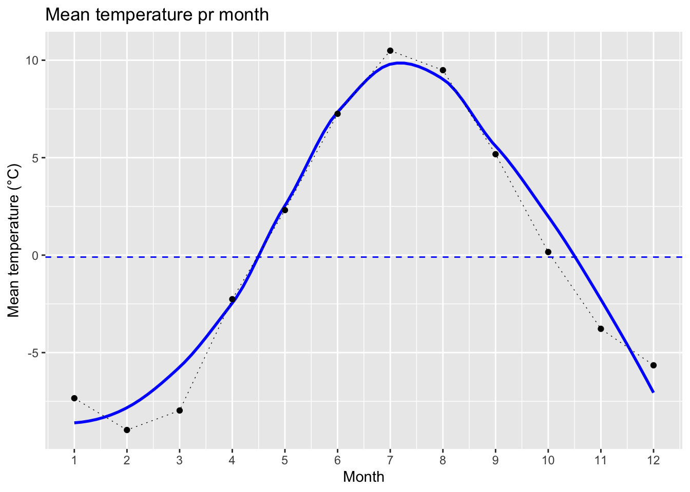
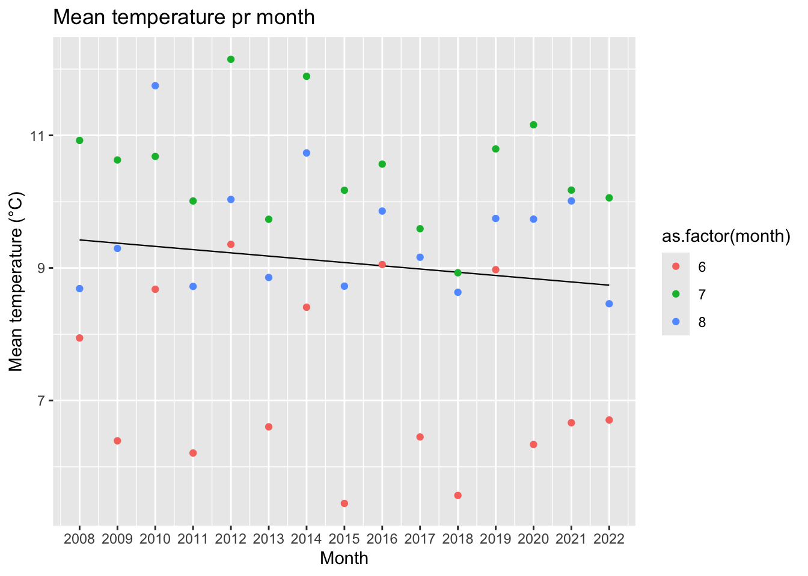
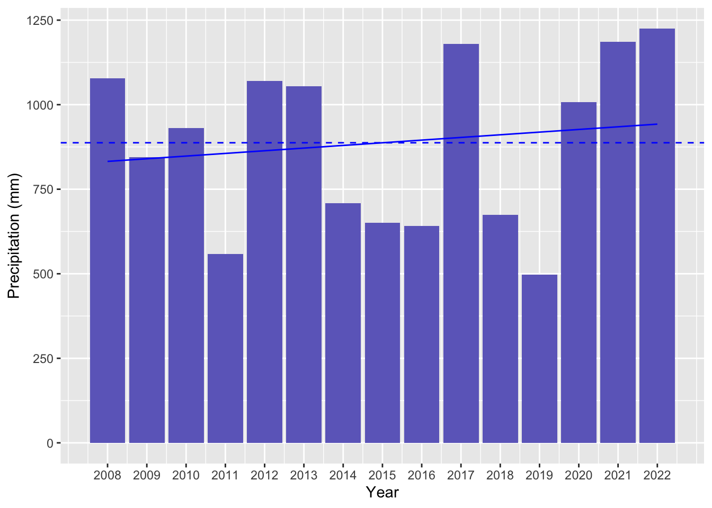
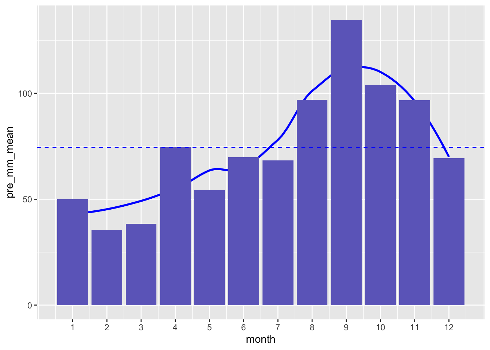
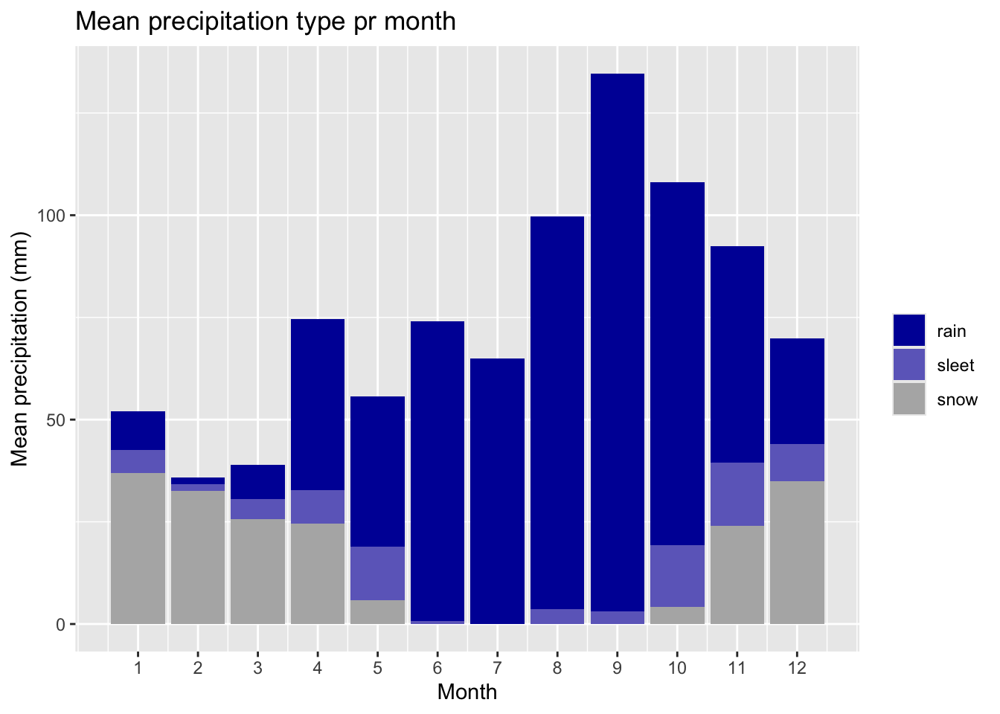
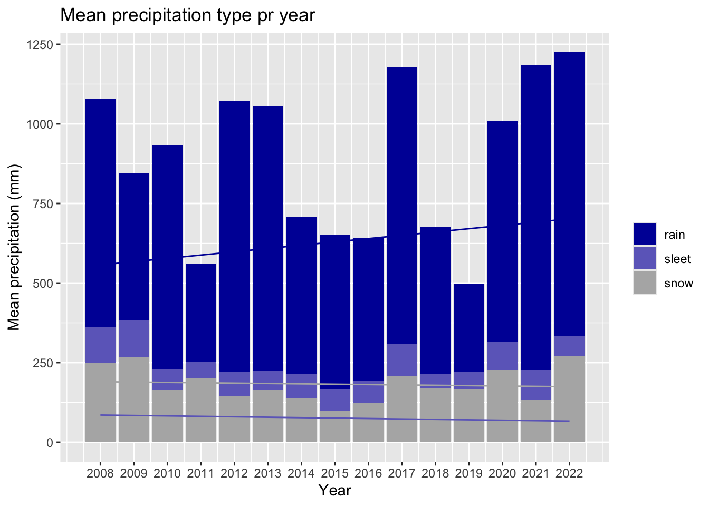
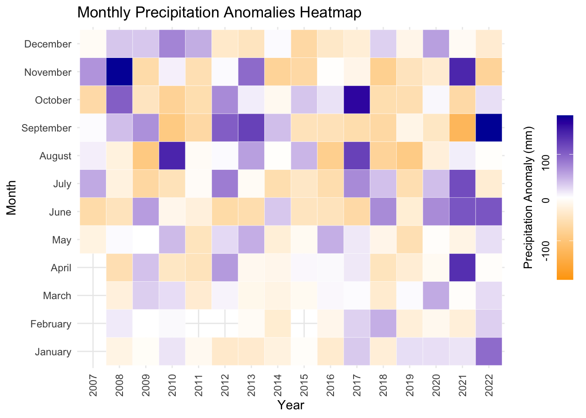
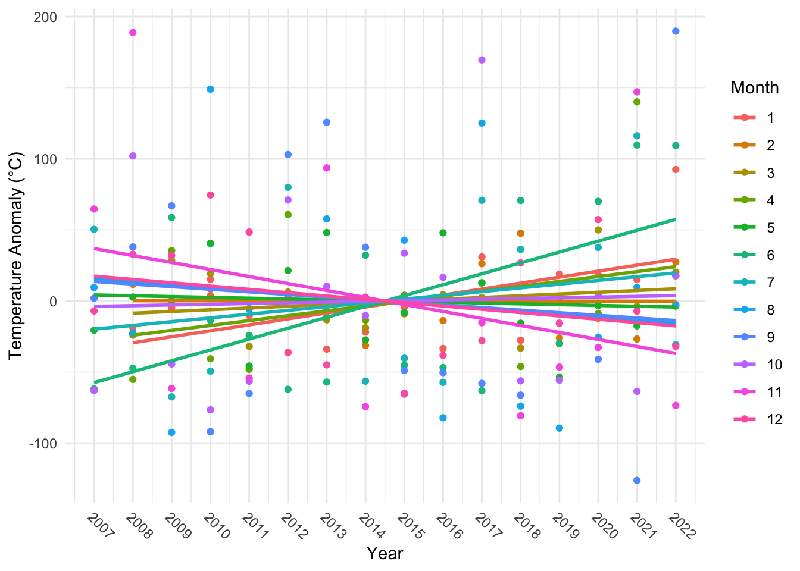
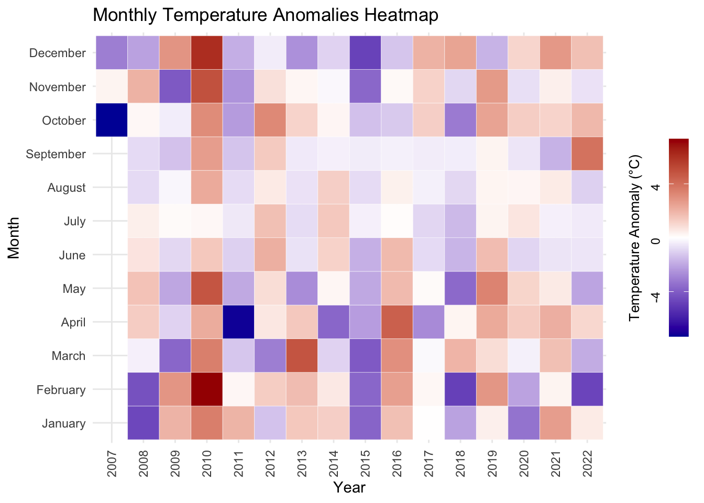
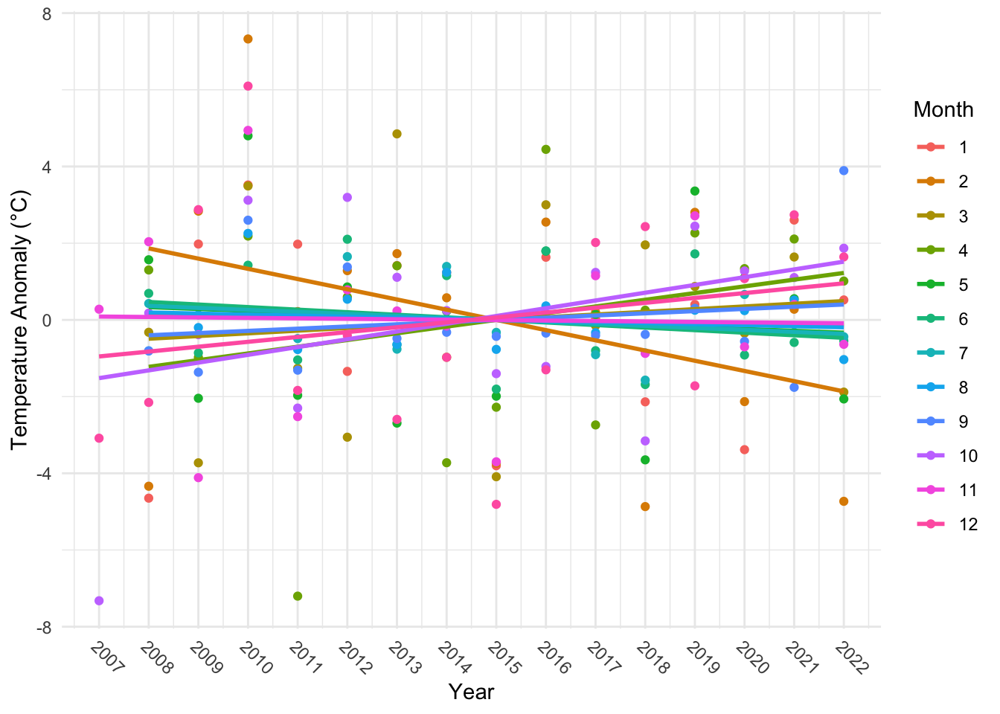

library(tidyverse)
library(janitor)
library(lubridate)
library(glue)
library(hms)
library(knitr)
opts_chunk$set( size="small")
# colors
sleet <- rgb(110/255, 107/255, 196/255, 1)
rain <- rgb(0/255, 0/255, 165/255, 1)
warm <- rgb(165/255, 0/255, 0/255, 1)macroclimate
Macroclimate
Background macroclimate of Kangerluarsunnguaq (Kobbefjord, Nuuk 64.13334, -51.34368). Data produced by Asiaq - Greenland Survey for Greenland Ecosystem Monitoring (Asiaq 2023, 2020).
Temperature data
data_temp <- read_delim("~/Library/CloudStorage/OneDrive-Aarhusuniversitet/MappingPlants/01 Vegetation changes Kobbefjord/data/r_climatedata/data/temperature/data/View_ClimateBasis_Nuuk_Data_Temperature_Air_temperature_@_200_cm__30min_average__DegreesC220420240157436123.csv", delim = "\t", escape_double = FALSE,col_types = cols(Date = col_datetime(format = "%Y-%m-%d"), Time = col_time(format = "%H:%M:%S")), trim_ws = TRUE) |>
janitor::clean_names() |>
drop_na() |>
filter(at_c != -9999) |>
mutate(year = year(date),
month = month(date),
doy = yday(date),
month_string = month.name[month])The imported data has entries between 2007 and 2022.
Temperatures between -30.2°C (2008-02-11) and 23.2°C (2016-06-10) have been recorded.
Mean annual temperature
The mean temperature across all entries is -0.1003°C.
data_temp_annual_mean <- data_temp |>
group_by(year) |>
filter(year != 2007) |> #excluding 2007 because it is only the months of oct, nov, dec
summarize(mean = mean(at_c))ggplot(data_temp_annual_mean, aes(x = year, y = mean))+
geom_smooth(method = lm, color = "blue", se = F)+
geom_point()+
geom_line(size = 0.25, color = "black", linetype="dotted")+
scale_x_continuous(breaks=seq(min(data_temp_annual_mean$year), max(data_temp_annual_mean$year), by = 1))+
geom_hline(yintercept=year_mean, linetype="dashed", color = "blue", size=0.5)+
labs(x = "Year", y = "Mean temperature (°C)", title = "Annual mean temperature, Kangerluassunguaq")
data_temp_monthly_mean <- data_temp |>
group_by(month) |>
summarize(mean = round(mean(at_c),2),
sd = round(sd(at_c),2)) |>
mutate(month_string = month.name[month]) |>
arrange(desc(mean)) |>
mutate(temp_rank = row_number())ggplot(data_temp_monthly_mean, aes(x = month, y = mean))+
geom_smooth(color = "blue", se = F)+
geom_point()+
geom_line(size = 0.25, linetype="dotted")+
scale_x_continuous(breaks=seq(1, 12, by = 1))+
geom_hline(yintercept=year_mean, linetype="dashed", color = "blue", size=0.5)+
labs(x = "Month", y = "Mean temperature (°C)", title = "Mean temperature pr month")

The warmest months are July (10.49°C), August (9.49°C) and June (7.25°C).
The coldest months are February (-8.97°C), March (-7.97°C), and January (-7.34°C).
data_temp_monthly_mean_summer <- data_temp |>
filter(month %in% c(6,7,8)) |>
group_by(month, year) |>
summarize(mean = mean(at_c))`summarise()` has grouped output by 'month'. You can override using the
`.groups` argument.ggplot(data_temp_monthly_mean_summer, aes(x = year, y = mean, color = as.factor(month)))+
geom_smooth(method = lm, color = "black", se = F, size = 0.4)+
geom_point()+
scale_x_continuous(breaks=seq(min(data_temp_monthly_mean_summer$year), max(data_temp_monthly_mean_summer$year), by = 1))+
#geom_hline(yintercept=year_mean, linetype="dashed", color = "blue", size=0.5)+
labs(x = "Month", y = "Mean temperature (°C)", title = "Mean temperature pr month")

Precipitation data
data_precip <- read_delim("~/Library/CloudStorage/OneDrive-Aarhusuniversitet/MappingPlants/01 Vegetation changes Kobbefjord/data/r_climatedata/data/precipitation/data/View_ClimateBasis_Nuuk_Data_Precipitation_Precipitation_accumulated_mm210420242020078158.csv", delim = "\t", escape_double = FALSE, col_types = cols(Date = col_date(format = "%Y-%m-%d"), Time = col_time(format = "%H:%M:%S")), trim_ws = TRUE) |>
janitor::clean_names() |>
drop_na() |>
filter(pre_mm != -9999) |>
mutate(year = year(date),
month = month(date),
doy = yday(date),
month_string = month.name[month])Yearly precipitation
data_precip_sum <- data_precip |>
group_by(year) |>
filter(year != 2007) |>
summarise(pre_mm_sum = sum(pre_mm))The mean annual precipitation is 887.36 mm.
ggplot(data_precip_sum, aes(y = pre_mm_sum, x = year))+
geom_bar(stat = "identity", fill = "#6e6bc4")+
scale_x_continuous(breaks=seq(min(data_precip_sum$year), max(data_precip_sum$year), by = 1))+
geom_hline(yintercept = precip_year_mean, linetype="dashed", color = "blue", linewidth =0.5)+
geom_smooth(method = lm, color = "blue", size = 0.5, se = F)`geom_smooth()` using formula = 'y ~ x'

Monthly precipitation
data_precip_month_sum <- data_precip |>
group_by(month, year) |>
summarise(pre_mm_sum = sum(pre_mm))
data_precip_month_mean <- data_precip_month_sum |>
group_by(month) |>
summarise(pre_mm_mean = round(mean(pre_mm_sum),2))
precip_month_mean <- round(mean(data_precip_month_mean$pre_mm_mean),2)ggplot(data_precip_month_mean, aes(y = pre_mm_mean, x = month))+
geom_smooth(color = "blue", se = F)+
geom_bar(stat = "identity", fill = "#6e6bc4")+
scale_x_continuous(breaks=seq(min(data_precip_month_mean$month), max(data_precip_month_mean$month), by = 1))+
geom_hline(yintercept = precip_month_mean, linetype="dashed", color = "blue", linewidth =0.25)

EDIT NOT DONE!!
On average across the monitoring period the months with most precipitation are -30.2°C (2008-02-11) and 23.2°C (2016-06-10) have been recorded.
September (134.80 mm), October (103.84 mm) and August (96.93 mm).
Precipitation split in rain and snow
# making the temperature data hourly
data_temp_hour <- data_temp |>
mutate(hour = substr(time, 1, 2)) |>
group_by(date, hour) |>
summarise(at_c = mean(at_c, na.rm = TRUE)) |>
mutate(time = hms::hms(hours = as.numeric(hour)))`summarise()` has grouped output by 'date'. You can override using the
`.groups` argument.# joint the temperature precipitation data to destinguish snow and rain.
# data_pre_tem_joined <- data_precip |>
# left_join(data_temp_hour, by = c("date" = "date", "time" = "time")) |>
# drop_na() |>
# mutate(precip_type = ifelse(at_c < 0,"snow","rain"))
sleet_lower <- -1
sleet_upper <- 1
data_pre_tem_joined <- data_precip |>
left_join(data_temp_hour, by = c("date" = "date", "time" = "time")) |>
drop_na() |>
mutate(precip_type = case_when(at_c < sleet_lower ~ "snow",
at_c <= sleet_upper ~ "sleet",
TRUE ~ "rain"))# joint the temperature precipitation data to destinguish snow and rain.
data_pre_tem_joined_monthly <- data_pre_tem_joined |>
group_by(year,month,precip_type) |>
summarise(sum = sum(pre_mm)) |>
filter(year != 2007)`summarise()` has grouped output by 'year', 'month'. You can override using the
`.groups` argument.# joint the temperature precipitation data to destinguish snow and rain.
data_pre_tem_monthly <- data_pre_tem_joined_monthly |>
group_by(month,precip_type) |>
summarise(mean = round(mean(sum),2)) `summarise()` has grouped output by 'month'. You can override using the
`.groups` argument.# joint the temperature precipitation data to distinguish snow and rain.
data_pre_tem_year <- data_pre_tem_joined_monthly |>
group_by(year,precip_type) |>
summarise(mean = round(sum(sum),2)) `summarise()` has grouped output by 'year'. You can override using the
`.groups` argument.ggplot(data_pre_tem_monthly, aes(x = month, y = mean, fill = precip_type)) +
geom_bar(stat = "identity")+
scale_x_continuous(breaks=seq(min(data_pre_tem_monthly$month), max(data_pre_tem_monthly$month), by = 1))+
labs(x = "Month", y = "Mean precipitation (mm)", title = "Mean precipitation type pr month")+
scale_fill_manual(values = c(rain,sleet,"#b3b3b3"))+
guides(fill = guide_legend(title = ""))

ggplot(data_pre_tem_year, aes(x = year, y = mean, fill = precip_type)) +
geom_bar(stat = "identity")+
scale_x_continuous(breaks=seq(min(data_pre_tem_year$year), max(data_pre_tem_year$year), by = 1))+
labs(x = "Year", y = "Mean precipitation (mm)", title = "Mean precipitation type pr year")+
scale_fill_manual(values = c(rain,sleet ,"#b3b3b3"))+
geom_smooth(aes(color = precip_type), method = "lm", se = FALSE, show.legend = FALSE, size = 0.5) +
scale_color_manual(values = c(rain, sleet, "#b3b3b3")) +
guides(fill = guide_legend(title = ""))`geom_smooth()` using formula = 'y ~ x'

library(ggplot2)
library(dplyr)
library(lubridate)
# Data prepping for precip anomalies heat map
data_precip_month_sum <- data_precip |>
group_by(year, month) |>
summarise(monthly_pre_sum = sum(pre_mm, na.rm = TRUE)) |>
ungroup()`summarise()` has grouped output by 'year'. You can override using the
`.groups` argument.data_precip_monthly_mean_sum <- data_precip_month_sum |>
group_by(month) |>
summarise(overall_pre_monthly_mean = mean(monthly_pre_sum, na.rm = TRUE)) |>
ungroup()
monthly_prep_anomalies <- data_precip_monthly_mean_sum |>
left_join(data_precip_month_sum, by = "month") |>
mutate(prep_anomaly = monthly_pre_sum - overall_pre_monthly_mean)ggplot(monthly_prep_anomalies, aes(x = factor(year), y = factor(month), fill = prep_anomaly)) +
geom_tile(color = "white") +
scale_fill_gradient2(low = "orange", high = rain, mid = "white",
midpoint = 0, limit = c(-max(abs(monthly_prep_anomalies$prep_anomaly)),
max(abs(monthly_prep_anomalies$prep_anomaly))),
space = "Lab", name="Precipitation\nAnomaly (mm)") +
labs(x = "Year", y = "Month", title = "Monthly Precipitation Anomalies Heatmap") +
scale_y_discrete(labels = month.name) + # Use full month names on y-axis
theme_minimal() +
theme(axis.text.x = element_text(angle = 90, vjust = 0.5, hjust=1))

ggplot(monthly_prep_anomalies, aes(x = year, y = prep_anomaly , color = as.factor(month))) +
geom_point(aes(color = factor(month))) + # Color points by month
geom_smooth(method = lm, se = F)+
#geom_smooth(method = "lm", se = FALSE, size = 0.4, color = "black") + # Single trend line in black
labs(x = "Year", y = "Temperature Anomaly (°C)", color = "Month") +
theme_minimal()+
scale_x_continuous(breaks=seq(min(monthly_prep_anomalies$year), max(monthly_prep_anomalies$year), by = 1))+
theme(axis.text.x = element_text(angle = -45, hjust=-0))`geom_smooth()` using formula = 'y ~ x'#vjust = 0.5,

library(ggplot2)
library(dplyr)
library(lubridate)
# Data prepping for temperature anomalies heat map
data_temp_monthly_mean <- data_temp |>
group_by(year, month) |>
summarise(monthly_mean = mean(at_c, na.rm = TRUE)) |>
ungroup()`summarise()` has grouped output by 'year'. You can override using the
`.groups` argument.data_temp_monthly_mean_overall <- data_temp_monthly_mean |>
group_by(month) |>
summarise(overall_monthly_mean = mean(monthly_mean, na.rm = TRUE)) |>
ungroup()
monthly_anomalies <- data_temp_monthly_mean |>
left_join(data_temp_monthly_mean_overall, by = "month") |>
mutate(temperature_anomaly = monthly_mean - overall_monthly_mean)ggplot(monthly_anomalies, aes(x = factor(year), y = factor(month), fill = temperature_anomaly)) +
geom_tile(color = "white") +
scale_fill_gradient2(low = rain, high = warm, mid = "white",
midpoint = 0, limit = c(-max(abs(monthly_anomalies$temperature_anomaly)),
max(abs(monthly_anomalies$temperature_anomaly))),
space = "Lab", name="Temperature Anomaly (°C)") +
labs(x = "Year", y = "Month", title = "Monthly Temperature Anomalies Heatmap") +
scale_y_discrete(labels = month.name) + # Use full month names on y-axis
theme_minimal() +
theme(axis.text.x = element_text(angle = 90, vjust = 0.5, hjust=1))

ggplot(monthly_anomalies, aes(x = year, y = temperature_anomaly, color = as.factor(month))) +
geom_point(aes(color = factor(month))) + # Color points by month
geom_smooth(method = lm, se = F)+
#geom_smooth(method = "lm", se = FALSE, size = 0.4, color = "black") + # Single trend line in black
labs(x = "Year", y = "Temperature Anomaly (°C)", color = "Month") +
theme_minimal()+
scale_x_continuous(breaks=seq(min(monthly_anomalies$year), max(monthly_anomalies$year), by = 1))+
theme(axis.text.x = element_text(angle = -45, hjust=-0))`geom_smooth()` using formula = 'y ~ x'#vjust = 0.5,

References
Asiaq. 2020. “ClimateBasis Nuuk - Precipitation - Precipitation Accumulated (Mm).” https://doi.org/10.17897/SXJ8-WA79.
———. 2023. “Air Temperature @ 200 Cm - 30 Min Average (°c).” https://doi.org/10.17897/PGN3-7597.